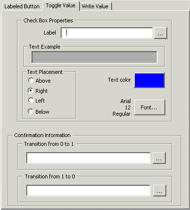

Configure Toggle Value tab
The Toggle Value (two-state) check box is used to toggle the value of a parameter field from 0 to 1 or 1 to 0, depending on its current value. A typical use would be to toggle a Boolean value; for example, to toggle the CV field of the BYPASSx parameter on a voter function block. However, the value written can be any numeric data type.
If no object is selected when the SIS Data Entry Expert is invoked and the Toggle Value tab is used, it creates a check box with a text label on a picture and creates a click-event script for the check box. Otherwise, the SIS Data Entry Expert creates a click-event script for the selected SIS object. If a non-SIS object is selected, this tab is not available.
In DeltaV Operate Run mode, the current value of the parameter is indicated in the check box. Unchecked indicates a zero value, and checked indicates a non-zero value.
If Electronic Signature is enabled for the parameter, the Electronic Signature dialog appears when the check box is selected in Run mode. When the Electronic Signature is successfully entered, or if Electronic Signature is not enabled, the confirmation dialog is displayed. The operator must then confirm the toggle request.
Select the Toggle Value tab to configure the toggle value.

The SIS Data Entry Expert prompts the user for the following
Label to be displayed on the graphic. You can change the font, color, and position of the label relative to the check box.
Text Example field showing how the label will appear on the graphic.
The full path of the parameter to be written.
The Confirmation Information text displayed on the confirmation dialog when the current value is 0 and the value to be written is 1. The text can be a string or a tilde character followed by the name of a variable. The string can be up to 300 characters and contain any keyboard character except double quote marks ("). Strings can also contain %P which is replaced in Run mode with the value from the %P Parameter. Use the browse button to select a variable.
The Confirmation Information text displayed on the confirmation dialog when the current value is not 0 (usually 1) and the value to be written is 0. The text can be a string or a tilde character followed by the name of a variable. The string can be up to 300 characters and can contain any keyboard character except double quote marks ("). Strings can also contain %P which is replaced in Run mode with the value from the %P Parameter. Use the browse button to select a variable
The full path of the %P parameter (optional). This option is used in the confirmation information fields (0 to 1 and 1 to 0) and is replaced in Run mode with the value of the %P Parameter.
The user must select the Toggle Value tab on the SIS Data Entry Expert dialog to see the fields associated with the Toggle Value. Once the required fields are configured, click OK to create the check box on the picture.